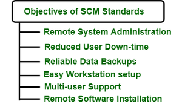

9.3 Objectives of SCM
The objectives of Software Configuration Management define what SCM is designed to achieve for a project and organisation. Objectives span both the classic software-engineering goals (integrity, traceability, controlled change) and operational goals (reliable environments, reduced downtime, multi-user support).
Three classic configuration management objectives
- Identify product configuration at points in time: SCM records the exact state of all configuration items at each milestone so the team knows precisely what was built and delivered.
- Systematically control configuration changes: Every modification follows a formal process — request, evaluation, approval, implementation, verification — rather than ad hoc edits.
- Maintain integrity and traceability: SCM ensures the product remains consistent and that every change can be traced from requirement through design, code, test, and delivery.

Key system-level SCM objectives
- Control the evolution of software systems: Changes are properly planned, tested, and integrated into the final product rather than applied unpredictably.
- Enable collaboration and coordination: All team members work from the same version of each work product, with conflicts detected and resolved systematically.
- Provide version control: Teams manage and track different versions of the system and can revert to earlier versions when needed.
- Facilitate replication and distribution: Software systems can be replicated to test, production, and customer environments with confidence that the configuration is identical.
- Ensure stakeholder visibility: All people involved in the process know what is being designed, developed, built, tested, and delivered at every stage.
Operational and standards objectives
- Remote system administration: SCM standards enable administrators to manage software configurations across distributed systems without physical access to each machine.
- Reduced user downtime: Controlled updates and rollback capability minimise disruption when changes are deployed.
- Reliable data backups: Version-controlled repositories serve as authoritative backups of all project artefacts.
- Easy workstation setup: Standard directory structures and configuration scripts allow new team members to set up a consistent development environment quickly.
- Multi-user support: SCM tools allow multiple developers to work on the same codebase concurrently without overwriting each other's changes.
- Uniform remote software installation: Standard configurations and scripts ensure software is installed consistently across all machines in an organisation.
Change control objective
- The change control component of SCM aims to identify, evaluate, prioritise, and control changes requested by team members or stakeholders.
- Changes must be analysed before implementation, recorded with before-and-after details, and reported to relevant parties.
- No change is applied silently — every modification goes through the formal change control process described in §9.5.
- Quality and consistency are preserved throughout the change process; records and revised plans are maintained when scope or deliverables change significantly.
SCM objectives in project management context
- Projects requiring scope or product changes need a configuration management plan as part of the overall project plan.
- SCM objectives support risk management by detecting and correcting problems early before they propagate across the system.
- SCM integrates with continuous integration and deployment (CI/CD) to automate testing and delivery of controlled builds.
- SCM is a critical component at CMM Level 2, where repeatable project management requires formal configuration control — see §3.10 CMM.
Exam question — Objectives of SCM
Q: List the objectives of Software Configuration Management. Distinguish between classic CM objectives and operational SCM objectives.
Model answer points:
- Classic 3: identify configuration at points in time; systematically control changes; maintain integrity & traceability.
- System-level: control evolution, collaboration, version control, replication/distribution, stakeholder visibility.
- Operational: remote admin, reduced downtime, reliable backups, easy setup, multi-user support, uniform installation.
- Change control objective: identify, evaluate, prioritise, control changes; no silent changes.
- Requires configuration management plan for scope/product changes; supports CI/CD and CMM Level 2.